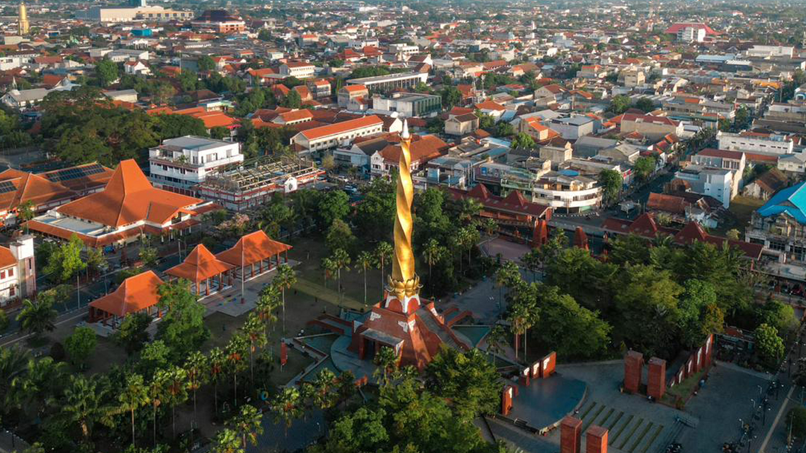

Sumber visual dan rujukan

FKK ITS x Dinkes Kota Mojokerto
Usulan pilot blok kedokteran komunitas koas yang terukur, aman, dan siap dijalankan
Presentasi ini merangkum alasan pemilihan lokasi, fokus intervensi, rencana kerja 20 hari, serta bentuk kontribusi mahasiswa FKK ITS yang siap dijalankan bersama puskesmas dan Pemerintah Kota Mojokerto.
Ringkasan Eksekutif
Tiga pesan utama yang perlu disepakati
Program ini disusun sebagai penugasan lapangan yang terukur, berorientasi hasil, dan langsung menjawab kebutuhan akademik FKK sekaligus kebutuhan operasional puskesmas.
Konteks Program
Mojokerto siap sebagai lokasi tahap awal dengan cakupan studi yang jelas
Kota Mojokerto memiliki 6 puskesmas. Presentasi ini menelaah 5 wilayah kajian blok kedokteran komunitas, lalu menetapkan 1 lokasi implementasi awal yang paling layak diselesaikan dalam satu rotasi.
Wilayah Studi
Lima wilayah kerja yang ditelaah sebelum lokasi tahap awal ditetapkan
Kelima wilayah ini merupakan cakupan studi blok kedokteran komunitas pada presentasi ini. Kedundung tidak dimasukkan ke komparatif utama karena bukan bagian dari objek kajian rotasi. Dari lima wilayah tersebut, Mentikan dipilih sebagai lokasi awal karena paling sesuai untuk penugasan 20 hari yang harus selesai, terukur, dan meninggalkan hasil.
Keputusan Lokasi
Mentikan dipilih sebagai lokasi implementasi awal
Keputusan ini berbasis kebutuhan lapangan, kelayakan implementasi dalam rotasi pendek, dan peluang menghasilkan paket kerja yang benar-benar dapat dipakai setelah program selesai.
Skor komparatif
Kenapa Mentikan unggul
Posisi keputusan
Fokus Intervensi
Masalah kota dibaca luas, intervensi rotasi dibuat terfokus
Beban penyakit kota dipakai sebagai konteks. Fokus rotasi 20 hari di Mentikan diarahkan pada titik yang paling mungkin diperbaiki cepat: perilaku keluarga balita dan alur layanan yang dapat disederhanakan.
Top 5 penyakit kolektif
Fokus 20 hari di Mentikan
Catatan istilah
N/D Balita = jumlah balita naik berat badan (N) dibanding jumlah balita yang ditimbang (D). Bukan sama dengan D/S.
Diagram Kerja
Kerangka aksi dari diagnosis sampai perubahan perilaku
Temuan lapangan diterjemahkan menjadi aksi yang dapat diukur, mudah diawasi, dan relevan bagi layanan rutin puskesmas.
Driver diagram Mentikan
Alur perubahan yang diharapkan
Bukti dan Rujukan
Konteks tempat, institusi, dan bukti rujukan resmi
Presentasi ini ditopang oleh sumber resmi Kota Mojokerto, Puskesmas Mentikan, dan acuan pendidikan profesi dokter. Visual dipakai untuk memperjelas konteks tempat dan institusi tanpa menggeser fokus dari keputusan program.
Rencana 20 Hari
Rencana kerja 20 hari yang rapi, terukur, dan mudah diaudit
Setiap workstream memiliki PIC, rentang waktu, dan milestone yang jelas. Ritme kerja utamanya sudah dapat dibaca utuh di satu layar ini.
Workstream dan PIC
Milestone utama
Fokus fase
Arahkan kursor atau klik balok untuk melihat rincian lengkap
Hari kerja
PIC akan muncul di sini.
Workstream akan muncul di sini.
Kontribusi dan Serah Terima
Mahasiswa bekerja sebagai tim pelaksana kecil yang meninggalkan hasil
Kontribusi mahasiswa dirancang agar relevan untuk penilaian akademik FKK sekaligus memberi manfaat operasional yang nyata bagi puskesmas dan kader di lapangan.
Struktur peran inti
Produk yang wajib keluar
Batas aman pelaksanaan
Persetujuan Rapat
Persetujuan yang dibutuhkan agar eksekusi dapat dimulai
Dengan persetujuan ini, pembahasan dapat langsung bergeser dari perencanaan ke persiapan eksekusi lapangan.
Persetujuan dari FKK ITS
Kesepakatan dengan Dinkes / Puskesmas
Jaminan pelaksanaan
Penutup
FKK ITS siap memulai tahap awal blok kedokteran komunitas bersama Dinkes Kota Mojokerto.
Program ini dirancang untuk memulai langkah yang kecil tetapi pasti: lokasi jelas, masalah terfokus, rencana kerja terukur, dan hasil akhir siap dipakai di lapangan.